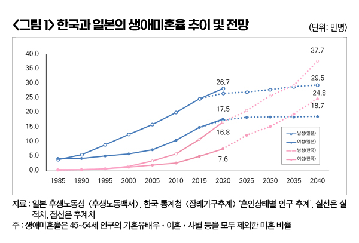

박영삼의 통계로 보는 노동
2035년 평생 결혼 안 하는 남성 29.3%, 여성 19.5% … 미혼율 높은 젊은층, 소득수준별 미혼 확률 차이 커

생애미혼율이라는 통계가 있다. 사전적 의미로는 ’평생 결혼하지 않는 사람의 비율’을 뜻하는데, 통계상으로는 ’50세 시점의 미혼율’로 정의되며 실제 통계를 작성할 때는 만 45～54세 인구의 평균 미혼율로 계산한다.
이 통계는 일본의 후생노동성 산하 국립사회보장·인구문제연구소가 5년 단위로 국세조사(인구총조사)의 실적치와 추계치를 이용해서 발표하고 있는데, 통계치가 공개될 때마다 국내외 언론들이 주요 소식으로 다루고 있다. 가장 최근의 일본 생애미혼율은 2020년 실적치(2022년 발표)로 남성이 28.3%, 여성이 17.8%였다. 일본의 성인 남성 가운데 3명 중 1명, 여성은 5명 중 1명 꼴로 평생 결혼을 하지 않는 상태에 있다는 것이다. 그리고 이 수치는 매번 당초 예상됐던 추계치를 넘어서는 결과를 보이고 있다. 2018년에 추계했던 2020년 생애미혼율은 남성 26.7%, 여성 17.5%였는데, 실제 통계는 이보다 각각 1.6%포인트, 0.3%포인트 더 높게 나온 것이다.

우리나라 통계청은 아직 생애미혼율을 공식 지표로 사용하지는 않고 있다. 대신 인구총조사와 장래가계추계의 ‘혼인상태별 인구’ 수치를 이용해서 계산할 수 있다. 이 자료로 계산한 우리나라의 생애미혼율은 2020년 기준으로 남성이 16.8%, 여성이 7.6%였다. 같은해 일본에 비해서는 남녀 각각 11.5%포인트, 10.2%포인트 낮은 수준이다. 하지만 우리나라의 생애미혼율 증가 추세가 매우 가파르기 때문에 10년 내에 일본을 추월할 것으로 예상되고 있다.
현재 두 나라의 연령대별 미혼율은 35세 이상은 일본이 우리보다 높고, 35세 미만은 한국이 더 높다<표 1>. 우리나라 청년들의 취업 시기와 초혼 연령이 일본보다 늦은 영향이 크다. 징병제와 더불어 결혼비용과 전세제도 등도 한일 간에 차이가 있다. 이런 상황에서 통계청 추계에 따르면 2035년 우리나라의 생애미혼율이 남자 29.3%, 여자 19.5%로 일본의 28.9%, 18.9%를 넘어설 것으로 전망된다. 2040년에는 남녀 각각 37.%, 24.8%에 달해 일본보다 무려 6～8%포인트 이상 높아질 것으로 예상된다. 이렇게 되면 합계출산율에 이어 생애미혼율까지 모두 현재 세계 최고령 국가인 일본보다 나쁜 상황에 놓이게 된다.
이와 함께 우려스러운 것은 소득계층 간 혼인율 격차가 크다는 점이다. ‘한국노동패널’ 자료에서 2023년 기준 20～39세 연령대의 개인소득 구간별 미혼율을 보면, 월소득 600만～699만원 구간에서는 미혼율이 남녀 모두 5～6%에 불과하지만 소득이 낮을수록 미혼율이 크게 증가하는 것으로 나타난다.

다만, 소득과 결혼에 미치는 연령효과를 고려해야 하기 때문에, 연령과 본인소득을 제외한 가구소득과 가구자산 등을 통제할 필요가 있다. 이에 다른 조건들이 동일하다는 가정하에 개인소득과 성별 차이가 미혼일 확률에 미치는 한계효과를 계산한 결과, 남성의 경우 개인소득이 100만원 감소하면 미혼일 확률이 6.6% 증가하는 것으로 나타났다. 여성은 다른 변수를 통제할 경우 반대로 소득이 증가할수록 미혼일 확률이 다소 증가하는 양(+)의 값을 보이긴 했지만 통계적으로 유의하지는 않았다. 소득격차가 청년 남성들의 미혼 확률에 더 큰 영향을 미친다는 것을 확인할 수 있다.
어쨌든 현재와 같은 상태가 계속되면 소득이 낮은 사람들은 가족을 이루지 못하고 소득이 높은 개인들끼리 가구를 형성하는 현상이 강화될 가능성이 크다. 이렇게 되면 개인 단위 불평등이 가구 단위로 더 크게 확대될 수 있다. 따라서 생애미혼율 증가 현상은 삶의 방식에 관한 다양한 가치관에 따른 선택의 결과가 아니라 계층 간 불평등이 굳어지는 위험신호로 받아들일 필요가 있다.
고려대 노동문제연구소 노동데이터센터장 (youngsampk@gmail.com)